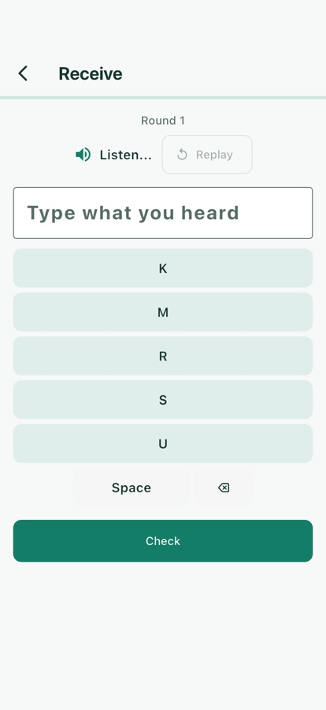
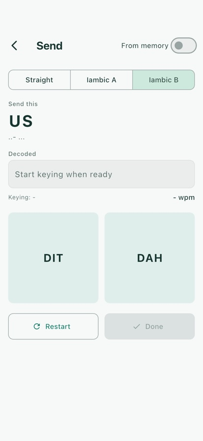
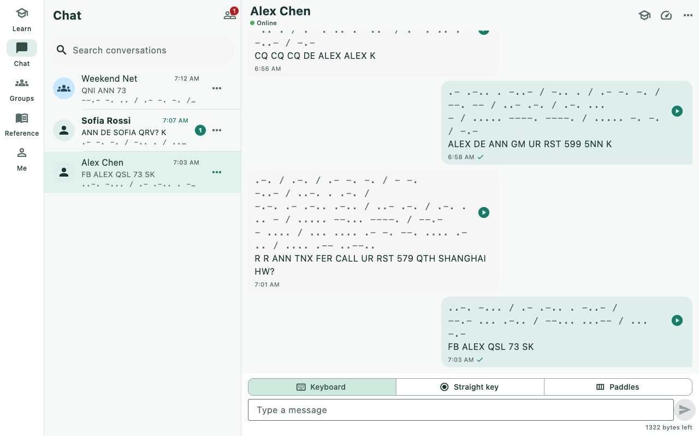
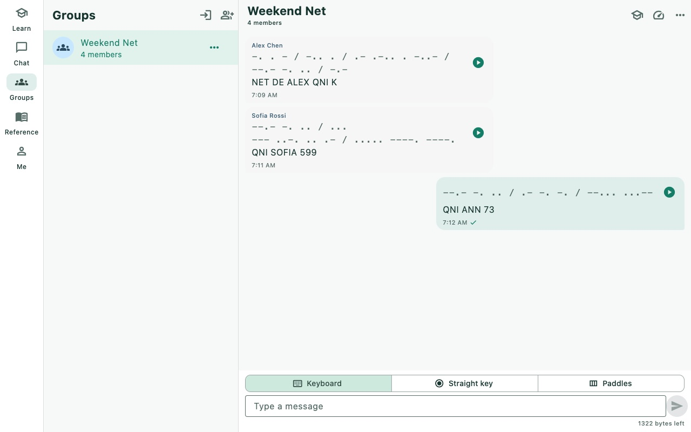

MorseCQ is a Morse code trainer and a serverless, peer-to-peer Morse chat. Learn the code with structured Koch lessons and keying drills, then key it to real people — one-to-one or in group nets — with no server in the middle.MorseCQ 既是摩尔斯电码训练器，也是无需服务器的点对点摩尔斯聊天工具。用 Koch 课程和拍发练习学会电码，再把它拍发给真实的人——一对一或在群组网络里——中间没有任何服务器。
Pre-alpha.预览版（Pre-alpha）。Every v1 module works and is tested, but expect breaking changes — including to saved data. Builds are not yet signed.v1 的全部模块都已可用并通过测试，但仍可能出现不兼容变更（包括已保存的数据）。安装包尚未签名。
· − · ·
Learn properly系统地学
Koch method with Farnsworth spacing, 42 lessons, spaced repetition and daily goals.Koch 教学法 + Farnsworth 字间距，42 课，间隔重复与每日目标。
− · − ·
Talk to people和真人通联
Messages replay as dits and dahs at your speed, one-to-one or in group nets.消息以你设定的速度回放为嘀嗒声，一对一或群组网络皆可。
− − · −
Truly peer-to-peer真正点对点
Built on the Tox network — end-to-end encrypted, no central server, no phone number.基于 Tox 网络——端到端加密，没有中心服务器，不需要手机号。
· − − ·
Everywhere全平台
One app for macOS, Windows, Linux, Android and iOS, in English and Chinese.同一款应用覆盖 macOS、Windows、Linux、Android 与 iOS，中英双语。
Everything you need, from first dit to first QSO从第一个“嘀”到第一次通联，一应俱全
Five destinations — Learn, Chat, Groups, Reference and Me — behind one Tox identity that you own.五个主页面——学习、聊天、群组、参考、我——共用一个完全属于你的 Tox 身份。
Learn学习
A real course, not a flashcard deck一套真正的课程，而不只是闪卡
MorseCQ teaches the way experienced operators recommend: characters at full speed from day one, new ones added only when you copy the current set reliably.MorseCQ 按资深报务员推荐的方式教学：从第一天起就以全速发音学字符，只有当前字符抄收稳定后才加入新字符。
Koch method — 42 lessons with progress stored per identity.Koch 教学法——42 课，进度按身份分别保存。
Farnsworth spacing — fast characters, generous gaps while you learn.Farnsworth 间距——字符快速，字间留足思考时间。
Spaced repetition — characters you miss come back when they are due.间隔重复——抄错的字符会在到期时再次出现。
Daily goals and streaks to keep a little practice going every day.每日目标与连续打卡，每天都练一点。
Receive & send drills抄收与拍发练习
Copy by ear, key by hand用耳朵抄收，用手拍发
Copy drills cover everything you hear on the air:抄收练习覆盖你在空中会听到的一切：
Send practice works on an on-screen straight key or iambic paddle, and on the desktop keyboard. A streaming decoder shows what you keyed in real time, with rhythm diagnostics that tell you whether your dahs are too short or your gaps too long.拍发练习支持屏幕上的手键、双桨自动键（iambic）以及桌面键盘。流式解码器实时显示你拍出的内容，节奏诊断会告诉你“嗒”是否太短、间隔是否太长。


Chat聊天
A Morse QSO with a friend, anywhere随时随地，和朋友来一次摩尔斯通联
Add friends by Tox ID or QR code — no phone number, no email, no sign-up.通过 Tox ID 或二维码加好友——无需手机号、邮箱或注册。
Replayed at the listener's speed — messages travel as plain text, and MorseCQ plays them back as dits and dahs at the WPM you choose.按收听者的速度回放——消息以纯文本传输，MorseCQ 按你设定的 WPM 播放成嘀嗒声。
Listen first, then reveal — a training mode that hides the text until you have copied it by ear.先听后看——训练模式会先隐藏文字，等你用耳朵抄完再显示。
Three ways to send: keyboard, straight key or paddle, with pre-listen before you hit send.三种发送方式：键盘、手键或电键，发送前可以先试听。
Offline queue — messages wait as "pending" until your friend comes online.离线队列——对方离线时消息标记为“待发送”，上线后自动送达。
Interoperates with toxee and any other Tim2Tox client.与 toxee 互通，也兼容其他 Tim2Tox 客户端。

Groups群组
Run a net with your club和你的电台俱乐部开一场网络通联
Create a group, invite friends or let them join by chat ID. Group messages are Morse too, with a member list and automatic re-join after restart. Built on Tox NGC groups, so there is still no server.创建群组、邀请好友，或让他们通过 chat ID 加入。群消息同样是摩尔斯电码，带成员列表，重启后自动重新入群。基于 Tox NGC 群组实现，依旧没有服务器。

Listen by microphone麦克风听码
Decode Morse from live audio — a radio, a practice oscillator, a video. Goertzel tone detection with auto-tune and an envelope gate.从现场音频解码摩尔斯电码——电台、练习振荡器或视频都行。Goertzel 音调检测，自动调谐，包络门限。
Reference & translator参考资料与翻译器
Alphabet, punctuation, prosigns, Q-codes and CW abbreviations, plus a two-way text ↔ Morse translator with playback.字母、标点、勤务符号、Q 简语和 CW 缩略语，外加支持播放的文本 ↔ 摩尔斯双向翻译器。
Radio tools无线电工具
Maidenhead locator with distance and beam heading, IARU band edges with wavelength and antenna lengths, CW speed calculator, RST builder and a UTC clock.梅登黑德网格定位（含距离与天线方位角）、IARU 各区频段边界（含波长与天线长度）、CW 速度换算、RST 报告生成器和 UTC 时钟。
Statistics统计
Accuracy trends, a per-character grid, a confusion heat-map that shows which characters you mix up, and a practice calendar.准确率趋势、逐字符掌握度网格、显示你常混淆哪些字符的混淆热力图，以及练习日历。
Five looks, light or dark五种风格，明暗随心
Modern Calm, Classic Brass, Night Radio, Paper Handbook and Fresh Cartoon — each with independent System / Light / Dark mode.Modern Calm、Classic Brass、Night Radio、Paper Handbook、Fresh Cartoon，每种都可独立选择跟随系统 / 浅色 / 深色。
Sound, haptics, light声音、振动、闪光
Low-latency sidetone on every platform, haptics on phones and a screen flash everywhere. Notifications arrive with a Morse pattern and an unread badge.全平台低延迟侧音、手机振动反馈、所有平台的屏幕闪光。通知带摩尔斯节奏和未读角标。
Your identity, your keys你的身份，你的密钥
The Tox identity is created on your device. Back it up and restore it as an encrypted .tox file or a QR code.Tox 身份在你自己的设备上生成，可备份 / 恢复为加密的 .tox 文件或二维码。
At home on the desktop桌面端体验完整
Window size remembered, close to tray, tray menu and keyboard shortcuts on macOS, Windows and Linux.在 macOS、Windows、Linux 上记住窗口大小，支持关闭到托盘、托盘菜单和快捷键。
How a message travels一条消息是怎么传过去的
1
You key it你拍发
Type, tap a straight key or squeeze a paddle. MorseCQ decodes your keying into text.打字、点手键或按双桨电键，MorseCQ 把你的拍发解码成文字。
2
Tox carries itTox 传输
The text travels end-to-end encrypted over the Tox peer-to-peer network. There is no central MorseCQ server and nothing stores your chat.文字经端到端加密的 Tox 点对点网络传给对方。没有 MorseCQ 中心服务器，也没有任何地方存储你的聊天记录。
3
They hear it对方收听
Their MorseCQ plays it as Morse at their chosen speed and tone — so a beginner and an old hand can talk comfortably.对方的 MorseCQ 按他们自己设定的速度和音调播放——新手和老手也能聊得自在。
Try it right here在这里试一试
Type something and hear it the way MorseCQ plays a message.输入一段文字，听听 MorseCQ 播放消息时的样子。
Screenshots截图
Real frames captured by the app's own screenshot tool, not mock-ups.均由应用自带的截图工具生成的真实画面，不是效果图。
Sign it yourself or sideload (e.g. AltStore, Sideloadly). Not on the App Store.需自行签名或侧载（如 AltStore、Sideloadly）。暂未上架 App Store。
From source从源码构建
Flutter 3.41.9 · Dart 3.11
git clone --recursive \
https://github.com/agentx-icu/morsecq.git
cd morsecq
dart run tool/bootstrap_deps.dart
dart pub get
cd apps/morsecq && flutter run
No. MorseCQ runs over the internet, not the airwaves — anyone can learn and chat. If you are a licensed operator, it is a great way to keep your CW sharp between contacts.不需要。MorseCQ 走的是互联网而不是无线电波，任何人都可以学习和聊天。如果你持有执照，它也是在两次上机之间保持 CW 手感的好办法。
Is there a server? Who can read my messages?有服务器吗？谁能看到我的消息？
There is no central MorseCQ server. Messages travel between devices over the Tox network, end-to-end encrypted — when a direct connection is not possible, Tox relays carry only ciphertext they cannot read. Your identity is a key pair generated on your device — back it up from Me → Backup, because nobody can recover it for you.MorseCQ 没有中心服务器。消息经 Tox 网络在设备之间端到端加密传输——无法直连时由 Tox 中继转发，但中继只能看到无法解读的密文。你的身份是在本机生成的密钥对——请在「我 → 备份」里备份，因为没有任何人能帮你找回。
Can I chat with people who use toxee or another Tox client?能和使用 toxee 或其他 Tox 客户端的人聊天吗？
Yes. Messages are sent as plain text using the same Tim2Tox protocol as toxee, so they can read your messages and you will hear theirs as Morse.可以。消息以纯文本、通过与 toxee 相同的 Tim2Tox 协议发送，所以对方能读到你的消息，你也能把他们的消息听成摩尔斯电码。
Do I need an account or an internet connection to practise?练习需要账号或联网吗？
There are no accounts. A local Tox identity is created on first launch and your training progress is stored against it on your device. Lessons and drills run locally.没有账号。首次启动时会在本机创建一个 Tox 身份，训练进度按这个身份保存在你的设备上。课程和练习都在本地运行。
Why does my system warn me when I install it?为什么安装时系统会弹出警告？
Pre-alpha builds are not yet code-signed or notarized. On macOS right-click the .pkg and choose Open (or run xattr -d com.apple.quarantine <file>); on Windows choose More info → Run anyway in SmartScreen. The Android APK uses a debug key, so a future store build will not upgrade it in place. Verify downloads against SHA256SUMS.Pre-alpha 版本尚未代码签名或公证。macOS 上请右键 .pkg 选择「打开」（或执行 xattr -d com.apple.quarantine <文件>）；Windows 上在 SmartScreen 中选择「更多信息 → 仍要运行」。Android APK 使用 debug 签名，将来的商店版本无法直接覆盖升级。可用 SHA256SUMS 校验下载文件。
Does it support voice or video calls?支持语音或视频通话吗？
No, by design. MorseCQ is about Morse. Transmitting your actual keying rhythm (rather than decoded text) is planned for a later version.不支持，这是有意为之——MorseCQ 只专注摩尔斯电码。传输你真实的拍发节奏（而不是解码后的文字）计划在后续版本实现。
Is it really free?真的免费吗？
Yes. MorseCQ is free software under the GNU General Public License v3.0. Bug reports and contributions are welcome on GitHub.是的。MorseCQ 是遵循 GNU GPL v3.0 的自由软件，欢迎到 GitHub 提交问题和贡献代码。